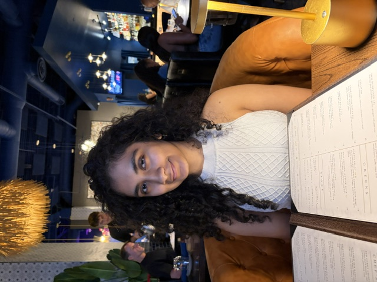
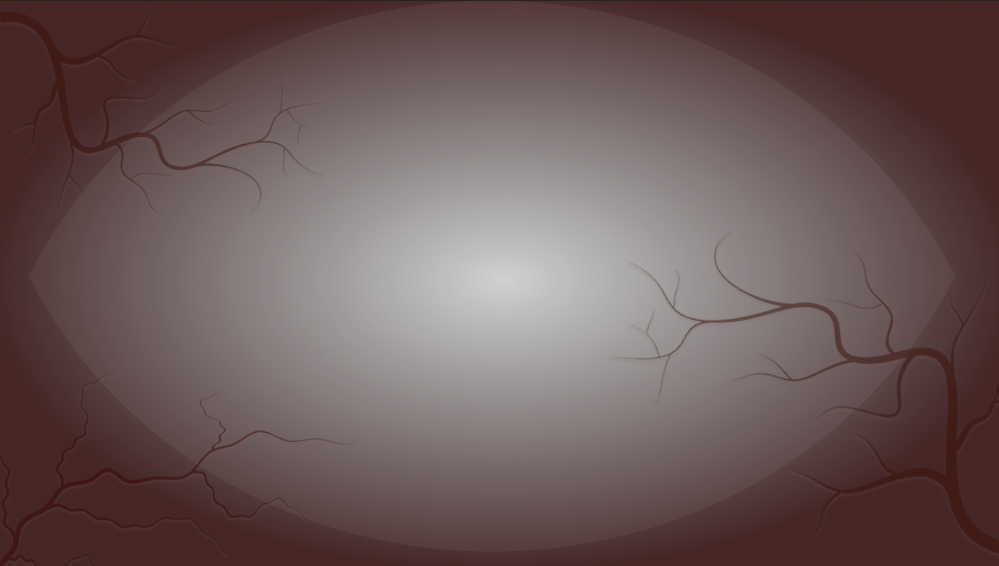
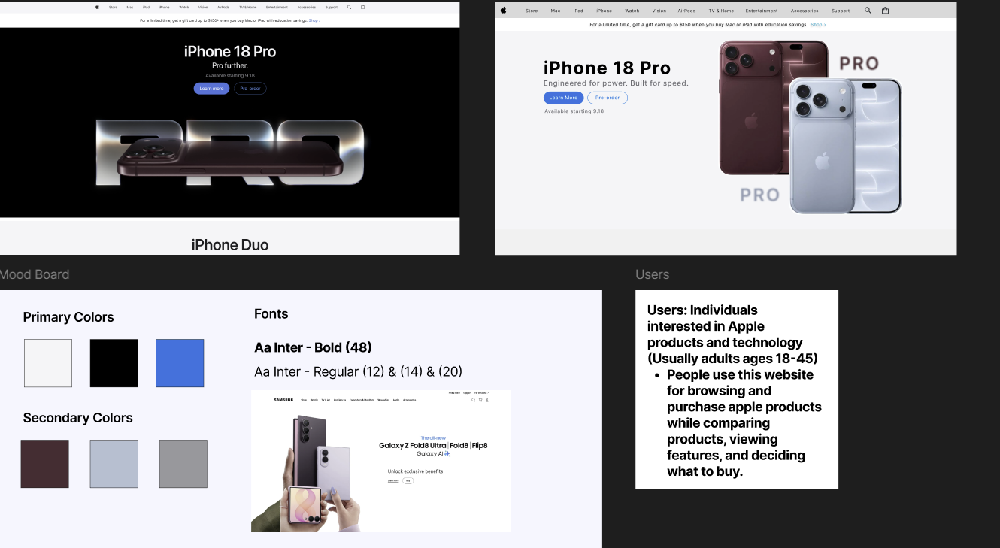

💻 Engineering
- HTML
- CSS
- JavaScript
- Python
- Java
- GameMaker (GML)
Computational Media · Georgia Tech
I'm a Computational Media student focused on software engineering, product engineering, and interaction design. I like figuring out how a system actually works, then building something that makes it clearer and faster to use, whether that's an ER intake tool or a 2D platformer.

01 / About
I'm studying Computational Media at the Georgia Institute of Technology, a degree that sits between computer science and design. That mix is what I like most: I get to write the code and shape how it feels to use.
My work spans front-end development with HTML, CSS, and JavaScript, interface design in Figma, and game development in GameMaker. Across all of it, I keep coming back to the same question: is this clear, and does it hold up for the person on the other side of the screen?
Before I design anything, I try to understand the real process first. For my ER triage project, that meant reading how emergency departments sort patients. For a Duolingo redesign, it meant writing a user persona. I'd rather build something that fits how people work than something that looks impressive and gets in the way.
I also work with AI tools like Kiro and Claude to get from an idea to a working prototype faster, while keeping the design and engineering decisions my own.
02 / Skills
03 / Projects
A few things I've designed and built recently. Open any project to see what the problem was, what I made, and the part I owned.

A patient intake tool that organizes information for ER staff and flags urgent cases, without making medical decisions itself.
An onboarding portal that gathers the tasks and resources new Georgia Tech students need into one place.

A 2D platformer with a bunny protagonist that I built end to end, from movement systems to art and UI.

UI overlays and controls I designed in Figma for a tense, paranoia-themed game built by a large VGDev team.

Interface redesigns in Figma, including Duolingo profile pages and an Etsy checkout rebuilt with Auto Layout.
04 / Experience
Georgia Tech
Georgia Tech
05 / Education & Honors
B.S. in Computational Media
High School Diploma
06 / Contact
I'm looking for internships and open to design or engineering collaborations. Email or LinkedIn is the quickest way to reach me.